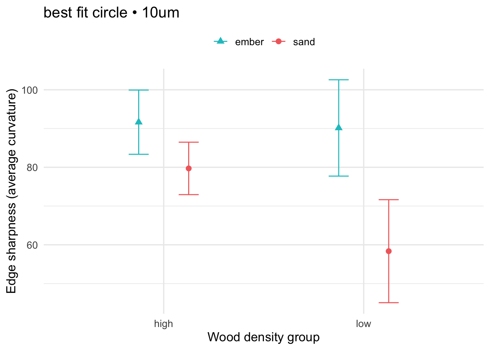
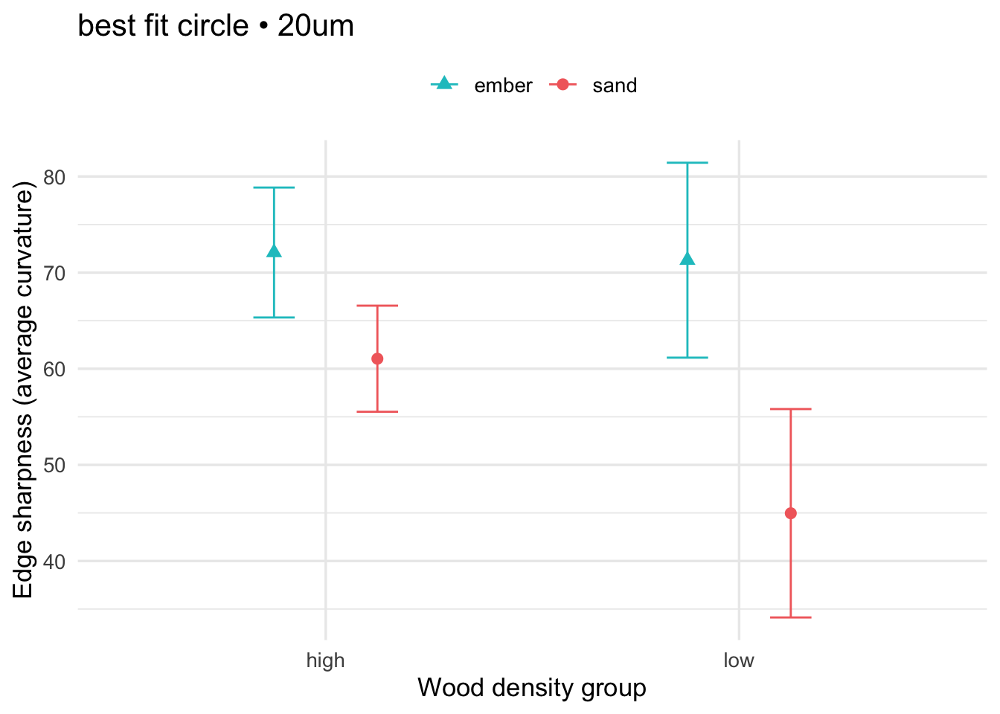
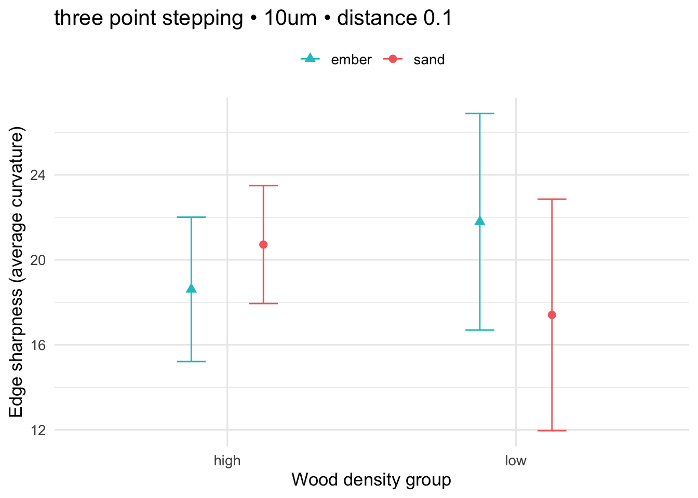
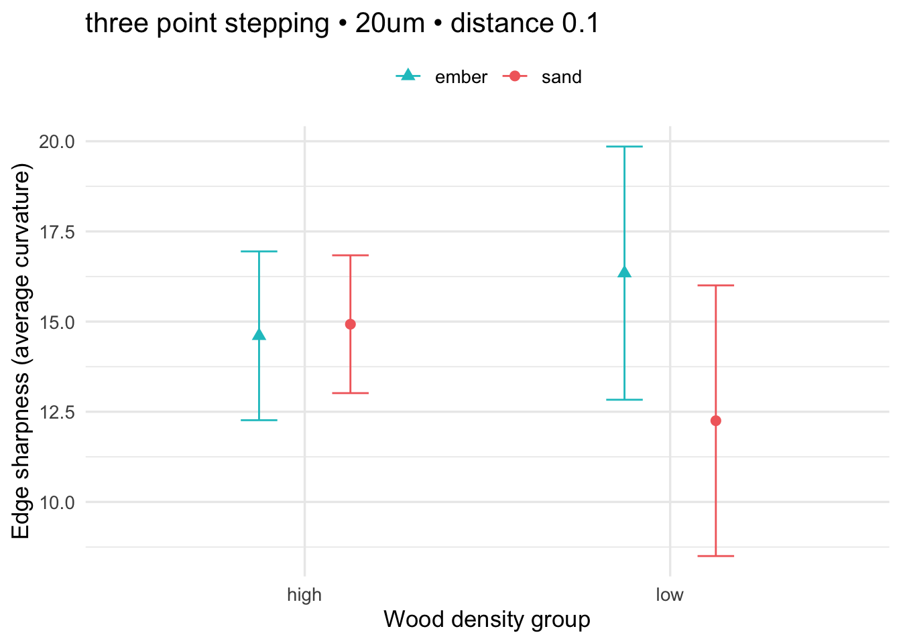
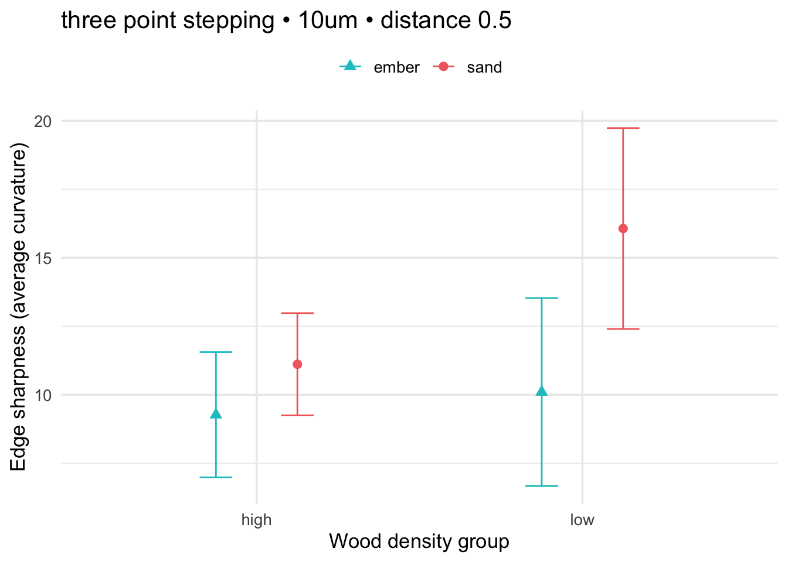
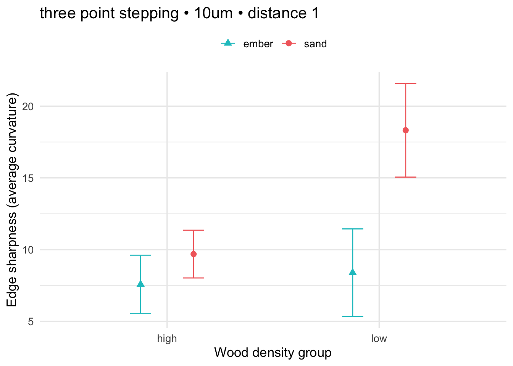
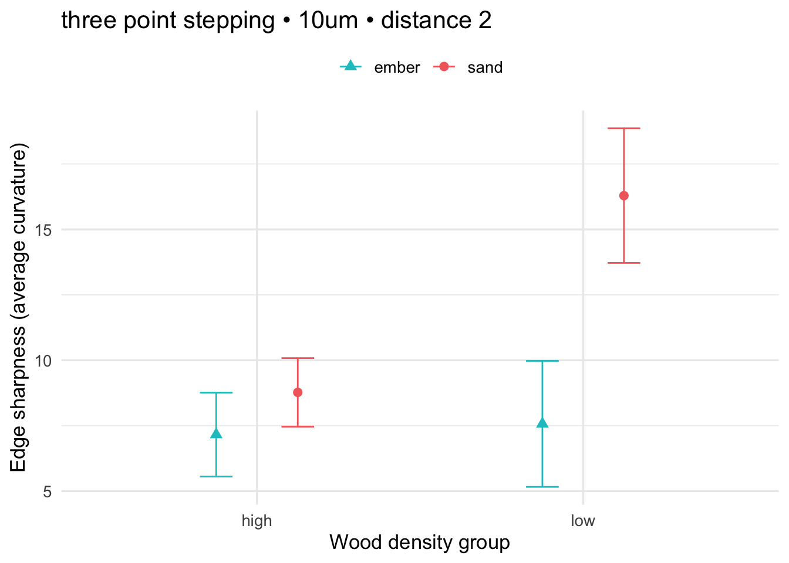
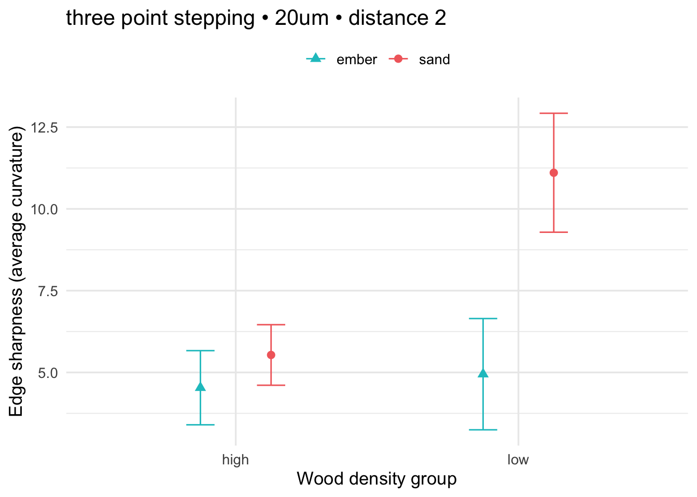
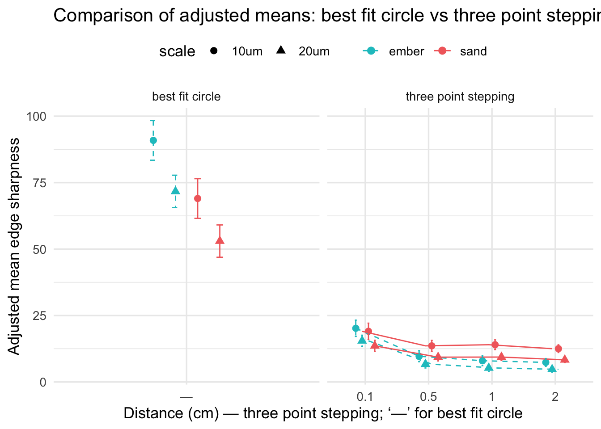

library(tidyverse)
library(car)
library(sandwich)
library(lmtest)
library(emmeans)
library(broom)
library(effectsize)
library(tibble)
data_path <- "wide-to-long_with_wood_density.csv"
dat <- readr::read_csv(data_path, show_col_types = FALSE)
dat <- dat %>%
mutate(
method = dplyr::recode(tolower(method),
"old method" = "three point stepping",
"new method" = "best fit circle"
),
scale = tolower(as.character(scale)),
treatment = as.character(treatment),
heating_condition = tolower(as.character(heating_condition)),
distance = suppressWarnings(as.numeric(distance))
)
# Exclude unheated
dat_filt <- dat %>% filter(!treatment %in% c("Unheated", "unheated"))
# Ensure categorical variables are factors for modeling
dat_filt <- dat_filt %>% mutate(
heating_condition = factor(heating_condition),
wood_density_group = factor(wood_density_group)
)Silcrete Edge Sharpness: Heating Technique vs. Wood Density Group
1 Overview
Here we analyze how heating technique (ember vs sand) and wood fuel density affect silcrete flake edge sharpness (average curvature).
- Exclude unheated observations.
- Analyze best fit circle method (10 µm and 20 µm).
- Analyze three point stepping method at distances 0.1, 0.5, 1.0, 2.0 cm and scales 10 µm, 20 µm.
- Fit OLS with interaction:
average_curvature ~ wood_density_group * heating_condition. - Use Type II ANOVA and HC3 robust SE for inference.
- Report adjusted means (EMMs) for heating condition (averaged over wood density groups) and, where useful, by each wood density group.
1.1 Packages & Data
1.2 Helper functions
fit_int_model <- function(df) {
df <- df %>% drop_na(average_curvature, heating_condition, wood_density_group)
if (nrow(df) < 5) return(NULL)
m <- lm(average_curvature ~ heating_condition * wood_density_group, data = df)
a2 <- tryCatch(
car::Anova(m, type = 2, white.adjust = "hc3"),
error = function(e) car::Anova(m, type = 2)
)
list(model = m, anova2 = a2)
}
tidy_anova <- function(a2, mdl = NULL) {
at <- as.data.frame(a2)
at$term <- rownames(at)
rownames(at) <- NULL
# Attach partial eta-squared (with 95% CI) by refitting model outside
# We rely on a globally available last-fitted model via parent frame when called.
# Safer: pass model explicitly where we call tidy_anova.
at %>% select(term, everything())
}
add_effectsizes <- function(a2, mdl) {
at <- as.data.frame(a2)
at$term <- rownames(at); rownames(at) <- NULL
# Compute partial eta squared with 95% CI
es <- tryCatch({
effectsize::eta_squared(mdl, partial = TRUE, ci = 0.95)
}, error = function(e) NULL)
if (!is.null(es)) {
# Normalize column names
if ('Parameter' %in% names(es)) es <- dplyr::rename(es, term = Parameter)
if ('Eta2_partial' %in% names(es)) es <- dplyr::rename(es, partial_eta2 = Eta2_partial)
if ('CI_low' %in% names(es)) es <- dplyr::rename(es, ci_low = CI_low)
if ('CI_high' %in% names(es)) es <- dplyr::rename(es, ci_high = CI_high)
keep <- intersect(names(es), c('term','partial_eta2','ci_low','ci_high'))
es <- es[, keep, drop = FALSE]
out <- dplyr::left_join(
at %>% dplyr::select(term, dplyr::everything()),
es,
by = 'term'
)
return(out)
}
at
}
emmeans_by_heat <- function(mdl, df) {
# Marginal means for heating_condition, averaging equally over wood_density_group levels
em <- emmeans::emmeans(mdl, specs = ~ heating_condition)
as.data.frame(summary(em)) %>%
rename(pred_mean = emmean, ci_low = lower.CL, ci_high = upper.CL)
}
# Plot in requested style
plot_interaction_custom <- function(mdl, df, title) {
# EMMs for the interaction to visualize two categorical predictors
em <- emmeans::emmeans(mdl, ~ heating_condition | wood_density_group)
df_em <- as.data.frame(summary(em)) %>%
rename(pred_mean = emmean, ci_low = lower.CL, ci_high = upper.CL)
cols <- c("sand" = "#F26B6B", "ember" = "#18C3C8")
shapes <- c("sand" = 16, "ember" = 17)
ggplot(df_em, aes(x = wood_density_group, y = pred_mean, colour = heating_condition)) +
geom_point(aes(shape = heating_condition), position = position_dodge(width = 0.5), size = 2.5) +
geom_errorbar(aes(ymin = ci_low, ymax = ci_high), position = position_dodge(width = 0.5), width = 0.2) +
scale_colour_manual(values = cols, name = NULL) +
scale_shape_manual(values = shapes, name = NULL) +
labs(title = title, x = "Wood density group", y = "Edge sharpness (average curvature)") +
theme_minimal(base_size = 13) + theme(legend.position = "top")
}2 best fit circle
new10 <- dat_filt %>% filter(method == "best fit circle", scale == "10um")
new20 <- dat_filt %>% filter(method == "best fit circle", scale == "20um")
# 10 µm
bestfitcircle_10_inter_plot <- NULL
cat("## best fit circle • 10um\n")## best fit circle • 10umres_n10 <- fit_int_model(new10)
if (!is.null(res_n10)) {
print(add_effectsizes(res_n10$anova2, res_n10$model))
print(lmtest::coeftest(res_n10$model, vcov = sandwich::vcovHC(res_n10$model, type = "HC3")))
print(emmeans_by_heat(res_n10$model, new10))
bestfitcircle_10_inter_plot <- plot_interaction_custom(res_n10$model, new10, "best fit circle • 10um")
print(bestfitcircle_10_inter_plot)
} term Df F Pr(>F) partial_eta2
1 heating_condition 1 18.594442 6.619171e-05 0.17706404
2 wood_density_group 1 3.925506 5.247693e-02 0.07766156
3 heating_condition:wood_density_group 1 4.605451 3.621870e-02 0.05970170
4 Residuals 56 NA NA NA
ci_low ci_high
1 0.05050379 1
2 0.00321005 1
3 0.00000000 1
4 NA NA
t test of coefficients:
Estimate Std. Error t value
(Intercept) 91.6423 4.0298 22.7413
heating_conditionsand -11.9327 5.6245 -2.1216
wood_density_grouplow -1.4877 5.6405 -0.2638
heating_conditionsand:wood_density_grouplow -19.8693 9.2586 -2.1460
Pr(>|t|)
(Intercept) < 2e-16 ***
heating_conditionsand 0.03831 *
wood_density_grouplow 0.79294
heating_conditionsand:wood_density_grouplow 0.03622 *
---
Signif. codes: 0 '***' 0.001 '**' 0.01 '*' 0.05 '.' 0.1 ' ' 1
heating_condition pred_mean SE df ci_low ci_high
ember 90.89843 3.728901 56 83.42855 98.36832
sand 69.03108 3.722065 56 61.57489 76.48727
Results are averaged over the levels of: wood_density_group
Confidence level used: 0.95 
# 20 µm
bestfitcircle_20_inter_plot <- NULL
cat("## best fit circle • 20um\n")## best fit circle • 20umres_n20 <- fit_int_model(new20)
if (!is.null(res_n20)) {
print(add_effectsizes(res_n20$anova2, res_n20$model))
print(lmtest::coeftest(res_n20$model, vcov = sandwich::vcovHC(res_n20$model, type = "HC3")))
print(emmeans_by_heat(res_n20$model, new20))
bestfitcircle_20_inter_plot <- plot_interaction_custom(res_n20$model, new20, "best fit circle • 20um")
print(bestfitcircle_20_inter_plot)
} term Df F Pr(>F) partial_eta2
1 heating_condition 1 23.626077 9.844347e-06 0.20363597
2 wood_density_group 1 5.372811 2.413087e-02 0.06461107
3 heating_condition:wood_density_group 1 4.298876 4.274969e-02 0.05340483
4 Residuals 56 NA NA NA
ci_low ci_high
1 0.06803909 1
2 0.00000000 1
3 0.00000000 1
4 NA NA
t test of coefficients:
Estimate Std. Error t value
(Intercept) 72.09326 3.91925 18.3947
heating_conditionsand -11.04973 4.89090 -2.2592
wood_density_grouplow -0.79945 5.24451 -0.1524
heating_conditionsand:wood_density_grouplow -15.27742 7.36839 -2.0734
Pr(>|t|)
(Intercept) < 2e-16 ***
heating_conditionsand 0.02778 *
wood_density_grouplow 0.87939
heating_conditionsand:wood_density_grouplow 0.04275 *
---
Signif. codes: 0 '***' 0.001 '**' 0.01 '*' 0.05 '.' 0.1 ' ' 1
heating_condition pred_mean SE df ci_low ci_high
ember 71.69354 3.041593 56 65.60049 77.78658
sand 53.00510 3.036017 56 46.92322 59.08697
Results are averaged over the levels of: wood_density_group
Confidence level used: 0.95 
3 three point stepping (all distances & scales)
old_combos <- expand.grid(
scale = c("10um","20um"),
distance = c(0.1, 0.5, 1.0, 2.0),
stringsAsFactors = FALSE
)
adj_means_all <- list()
for (i in seq_len(nrow(old_combos))) {
sc <- old_combos$scale[i]
di <- old_combos$distance[i]
dfi <- dat_filt %>%
filter(method == "three point stepping", scale == sc, distance == di) %>%
drop_na(average_curvature, heating_condition, wood_density_group)
ttl <- paste0("three point stepping • ", sc, " • distance ", di)
cat("## ", ttl, "\n", sep = "")
res <- fit_int_model(dfi)
if (!is.null(res)) {
print(tidy_anova(res$anova2))
print(lmtest::coeftest(res$model, vcov = sandwich::vcovHC(res$model, type = "HC3")))
print(emmeans_by_heat(res$model, dfi))
print(plot_interaction_custom(res$model, dfi, ttl))
em <- emmeans_by_heat(res$model, dfi) %>%
mutate(method = "three point stepping", scale = sc, distance = di)
adj_means_all[[length(adj_means_all)+1]] <- em
} else {
message("Skipped (insufficient rows): ", ttl)
}
}## three point stepping • 10um • distance 0.1
term Df F Pr(>F)
1 heating_condition 1 0.7262809 0.3977214
2 wood_density_group 1 0.5802952 0.4493930
3 heating_condition:wood_density_group 1 1.4764165 0.2294343
4 Residuals 56 NA NA
t test of coefficients:
Estimate Std. Error t value
(Intercept) 18.60906 0.96382 19.3076
heating_conditionsand 2.10736 1.75101 1.2035
wood_density_grouplow 3.17948 4.65057 0.6837
heating_conditionsand:wood_density_grouplow -6.48892 5.34033 -1.2151
Pr(>|t|)
(Intercept) <2e-16 ***
heating_conditionsand 0.2338
wood_density_grouplow 0.4970
heating_conditionsand:wood_density_grouplow 0.2294
---
Signif. codes: 0 '***' 0.001 '**' 0.01 '*' 0.05 '.' 0.1 ' ' 1
heating_condition pred_mean SE df ci_low ci_high
ember 20.1988 1.528517 56 17.13682 23.26079
sand 19.0617 1.525715 56 16.00533 22.11807
Results are averaged over the levels of: wood_density_group
Confidence level used: 0.95 
## three point stepping • 20um • distance 0.1
term Df F Pr(>F)
1 heating_condition 1 0.01607958 0.8995487
2 wood_density_group 1 1.28152998 0.2624390
3 heating_condition:wood_density_group 1 1.39932660 0.2418342
4 Residuals 56 NA NA
t test of coefficients:
Estimate Std. Error t value
(Intercept) 14.60653 0.72251 20.2164
heating_conditionsand 0.32096 1.21273 0.2647
wood_density_grouplow 1.73688 3.30723 0.5252
heating_conditionsand:wood_density_grouplow -4.41262 3.73024 -1.1829
Pr(>|t|)
(Intercept) <2e-16 ***
heating_conditionsand 0.7922
wood_density_grouplow 0.6015
heating_conditionsand:wood_density_grouplow 0.2418
---
Signif. codes: 0 '***' 0.001 '**' 0.01 '*' 0.05 '.' 0.1 ' ' 1
heating_condition pred_mean SE df ci_low ci_high
ember 15.47497 1.052984 56 13.36559 17.58435
sand 13.58963 1.051054 56 11.48411 15.69514
Results are averaged over the levels of: wood_density_group
Confidence level used: 0.95 
## three point stepping • 10um • distance 0.5
term Df F Pr(>F)
1 heating_condition 1 4.291871 0.04291304
2 wood_density_group 1 5.303200 0.02502429
3 heating_condition:wood_density_group 1 1.574424 0.21477730
4 Residuals 56 NA NA
t test of coefficients:
Estimate Std. Error t value
(Intercept) 9.26978 0.85924 10.7884
heating_conditionsand 1.84290 1.32596 1.3899
wood_density_grouplow 0.82878 2.68212 0.3090
heating_conditionsand:wood_density_grouplow 4.12621 3.28845 1.2548
Pr(>|t|)
(Intercept) 2.72e-15 ***
heating_conditionsand 0.1701
wood_density_grouplow 0.7585
heating_conditionsand:wood_density_grouplow 0.2148
---
Signif. codes: 0 '***' 0.001 '**' 0.01 '*' 0.05 '.' 0.1 ' ' 1
heating_condition pred_mean SE df ci_low ci_high
ember 9.684167 1.028655 56 7.623523 11.74481
sand 13.590178 1.026769 56 11.533311 15.64704
Results are averaged over the levels of: wood_density_group
Confidence level used: 0.95 
## three point stepping • 20um • distance 0.5
term Df F Pr(>F)
1 heating_condition 1 3.586408 0.06342395
2 wood_density_group 1 5.305775 0.02499063
3 heating_condition:wood_density_group 1 1.723681 0.19457477
4 Residuals 56 NA NA
t test of coefficients:
Estimate Std. Error t value
(Intercept) 6.35177 0.55704 11.4026
heating_conditionsand 1.11326 0.89820 1.2394
wood_density_grouplow 0.68387 1.83811 0.3720
heating_conditionsand:wood_density_grouplow 3.05202 2.32466 1.3129
Pr(>|t|)
(Intercept) 3.178e-16 ***
heating_conditionsand 0.2204
wood_density_grouplow 0.7113
heating_conditionsand:wood_density_grouplow 0.1946
---
Signif. codes: 0 '***' 0.001 '**' 0.01 '*' 0.05 '.' 0.1 ' ' 1
heating_condition pred_mean SE df ci_low ci_high
ember 6.693703 0.7129907 56 5.265410 8.121995
sand 9.332973 0.7116837 56 7.907299 10.758646
Results are averaged over the levels of: wood_density_group
Confidence level used: 0.95 ## three point stepping • 10um • distance 1
term Df F Pr(>F)
1 heating_condition 1 8.787042 0.004449652
2 wood_density_group 1 13.942397 0.000443038
3 heating_condition:wood_density_group 1 6.051971 0.017002531
4 Residuals 56 NA NA
t test of coefficients:
Estimate Std. Error t value
(Intercept) 7.57480 0.63101 12.0042
heating_conditionsand 2.11220 1.08574 1.9454
wood_density_grouplow 0.81584 2.52011 0.3237
heating_conditionsand:wood_density_grouplow 7.81767 3.17782 2.4601
Pr(>|t|)
(Intercept) < 2e-16 ***
heating_conditionsand 0.05675 .
wood_density_grouplow 0.74735
heating_conditionsand:wood_density_grouplow 0.01700 *
---
Signif. codes: 0 '***' 0.001 '**' 0.01 '*' 0.05 '.' 0.1 ' ' 1
heating_condition pred_mean SE df ci_low ci_high
ember 7.982716 0.9161524 56 6.147442 9.817989
sand 14.003746 0.9144729 56 12.171837 15.835656
Results are averaged over the levels of: wood_density_group
Confidence level used: 0.95 
## three point stepping • 20um • distance 1
term Df F Pr(>F)
1 heating_condition 1 7.804883 0.0071196439
2 wood_density_group 1 13.265192 0.0005919413
3 heating_condition:wood_density_group 1 6.029575 0.0171978172
4 Residuals 56 NA NA
t test of coefficients:
Estimate Std. Error t value
(Intercept) 4.95095 0.38766 12.7714
heating_conditionsand 1.34538 0.72832 1.8472
wood_density_grouplow 0.62830 1.75492 0.3580
heating_conditionsand:wood_density_grouplow 5.51874 2.24749 2.4555
Pr(>|t|)
(Intercept) <2e-16 ***
heating_conditionsand 0.0700 .
wood_density_grouplow 0.7217
heating_conditionsand:wood_density_grouplow 0.0172 *
---
Signif. codes: 0 '***' 0.001 '**' 0.01 '*' 0.05 '.' 0.1 ' ' 1
heating_condition pred_mean SE df ci_low ci_high
ember 5.265099 0.6356417 56 3.991755 6.538442
sand 9.369846 0.6344765 56 8.098837 10.640855
Results are averaged over the levels of: wood_density_group
Confidence level used: 0.95 ## three point stepping • 10um • distance 2
term Df F Pr(>F)
1 heating_condition 1 9.049031 3.932776e-03
2 wood_density_group 1 23.483972 1.036906e-05
3 heating_condition:wood_density_group 1 8.009166 6.450332e-03
4 Residuals 56 NA NA
t test of coefficients:
Estimate Std. Error t value
(Intercept) 7.15867 0.61227 11.6921
heating_conditionsand 1.61278 0.89328 1.8055
wood_density_grouplow 0.40848 2.12498 0.1922
heating_conditionsand:wood_density_grouplow 7.11059 2.51253 2.8300
Pr(>|t|)
(Intercept) < 2e-16 ***
heating_conditionsand 0.07638 .
wood_density_grouplow 0.84826
heating_conditionsand:wood_density_grouplow 0.00645 **
---
Signif. codes: 0 '***' 0.001 '**' 0.01 '*' 0.05 '.' 0.1 ' ' 1
heating_condition pred_mean SE df ci_low ci_high
ember 7.362908 0.7219954 56 5.916578 8.809239
sand 12.530983 0.7206718 56 11.087303 13.974662
Results are averaged over the levels of: wood_density_group
Confidence level used: 0.95 
## three point stepping • 20um • distance 2
term Df F Pr(>F)
1 heating_condition 1 7.944758 6.653897e-03
2 wood_density_group 1 27.548033 2.442138e-06
3 heating_condition:wood_density_group 1 8.526821 5.034149e-03
4 Residuals 56 NA NA
t test of coefficients:
Estimate Std. Error t value
(Intercept) 4.53342 0.41174 11.0105
heating_conditionsand 1.00125 0.62382 1.6050
wood_density_grouplow 0.41428 1.50172 0.2759
heating_conditionsand:wood_density_grouplow 5.15528 1.76546 2.9201
Pr(>|t|)
(Intercept) 1.245e-15 ***
heating_conditionsand 0.114115
wood_density_grouplow 0.783663
heating_conditionsand:wood_density_grouplow 0.005034 **
---
Signif. codes: 0 '***' 0.001 '**' 0.01 '*' 0.05 '.' 0.1 ' ' 1
heating_condition pred_mean SE df ci_low ci_high
ember 4.740556 0.5100698 56 3.718764 5.762349
sand 8.319442 0.5091347 56 7.299522 9.339361
Results are averaged over the levels of: wood_density_group
Confidence level used: 0.95 
# Bind adjusted means
adj_means_old <- if (length(adj_means_all) > 0) {
dplyr::bind_rows(adj_means_all) %>% mutate(distance = as.character(distance))
} else {
tibble::tibble(
heating_condition = character(),
pred_mean = double(),
ci_low = double(),
ci_high = double(),
method = character(),
scale = character(),
distance = character()
)
}3.1 Summary figure (OLD only)
three_point_stepping_summary_plot<-if (nrow(adj_means_old) > 0) {
ggplot(adj_means_old,
aes(x = factor(distance),
y = pred_mean,
group = interaction(heating_condition, scale),
colour = heating_condition, shape = scale, linetype = heating_condition)) +
geom_point(position = position_dodge(width = 0.3), size = 2.2) +
geom_line(position = position_dodge(width = 0.3)) +
geom_errorbar(aes(ymin = ci_low, ymax = ci_high),
width = 0.08, position = position_dodge(width = 0.3)) +
scale_colour_manual(values = c("sand"="#F26B6B","ember"="#18C3C8"), name = NULL) +
scale_linetype_manual(values = c("sand"=1,"ember"=2), name = NULL) +
labs(x = "Distance (cm)", y = "Adjusted mean edge sharpness",
title = "Adjusted means (±95% CI) by heating condition — three point stepping") +
theme_minimal(base_size = 13) +
theme(legend.position = "top")
}4 Combined comparison: best fit circle vs three point stepping
# Adjusted means for best fit circle
adj_means_new <- bind_rows(
if (!is.null(res_n10)) emmeans_by_heat(res_n10$model, new10) %>% mutate(method="best fit circle", scale="10um", distance="—"),
if (!is.null(res_n20)) emmeans_by_heat(res_n20$model, new20) %>% mutate(method="best fit circle", scale="20um", distance="—")
)
adj_all <- bind_rows(adj_means_new, adj_means_old)
ggplot(adj_all,
aes(x = factor(distance, levels=c("—","0.1","0.5","1","2")),
y = pred_mean,
colour = heating_condition, shape = scale, linetype = heating_condition)) +
geom_point(position = position_dodge(width = 0.4), size = 2.5) +
geom_line(aes(group = interaction(heating_condition, scale, method)),
position = position_dodge(width = 0.4)) +
geom_errorbar(aes(ymin = ci_low, ymax = ci_high),
width = 0.12, position = position_dodge(width = 0.4)) +
facet_wrap(~ method, scales = "free_x") +
scale_colour_manual(values = c("sand"="#F26B6B","ember"="#18C3C8"), name = NULL) +
scale_linetype_manual(values = c("sand"=1,"ember"=2), name = NULL) +
labs(x = "Distance (cm) — three point stepping; ‘—’ for best fit circle",
y = "Adjusted mean edge sharpness",
title = "Comparison of adjusted means: best fit circle vs three point stepping (10µm & 20µm)") +
theme_minimal(base_size = 13) +
theme(legend.position = "top")
5 Exports (Tables & Figure)
# Create an 'exports' directory next to this file
exports_dir <- file.path(getwd(), "step 3-exports")
if (!dir.exists(exports_dir)) dir.create(exports_dir, recursive = TRUE)
suppressPackageStartupMessages({
library(dplyr)
library(tidyr)
library(gt)
library(stringr)
library(readr)
library(ggplot2)
})5.1 Table 1. Data sample summary
This table summarizes the analytical sample used in this notebook by method, scale, distance, and heating condition (saved to file).
5.2 Figures (saved to file)
This recreates the papers plots and exports them to high-resolution PNG and PDF suitable for publication.
6 General Summary
Across all ANOVA models, we observe a consistent pattern:
- Omnibus ANOVA tests indicate significant overall differences in edge sharpness across heating conditions, even after controlling for wood density and using robust standard errors.
- Coefficient-level contrasts vs. baseline are not always significant, reflecting that robust SEs widen uncertainty and that differences may lie between non-baseline conditions.
- Pairwise post-hoc tests (emmeans) clarify which specific heating conditions differ. These contrasts provide the most reliable picture of group-level differences.
Takeaway. The results suggest that heating technique has a detectable overall effect on edge sharpness, but the specific contrasts driving this effect are subtle. Interpretation should emphasize the omnibus ANOVA findings, supported by pairwise comparisons rather than sole reliance on baseline contrasts.